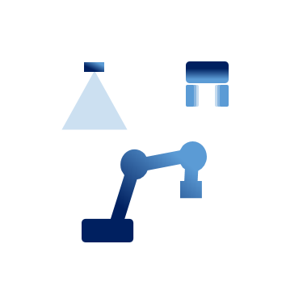

---
# Feel free to add content and custom Front Matter to this file.
# To modify the layout, see https://jekyllrb.com/docs/themes/#overriding-theme-defaults
slug: index
layout: homepage
title: Home
---
<div class="container-fluid">
    <div class="homepage-header">
    <div style="background-image: url('{{site.prefix}}/assets/images/header-image.jpg');background-size: cover;">
        <div class="row row align-items-end homepage-header-image" style="background:rgba(0,0,0,0.5); ">
            <div class="col-sm-12">
                <div class="homepage-header-text">
                    <div class="row homepage-main-wrapper justify-content-end">
                        <div class="col-xs-12 col-lg-8 col-sm-12">
                            <div class="homepage-headline">
                                <h1>The consortium for open-source robot automation</h1>
                                <p class="main-text">
                                    Controlling industrial robots independently of the manufacturer<br/>
                                    and enabling new and advanced industrial robot applications
                                </p>
                                <div class="button-group">
                                    <a class="button button-transparent" href="#">Get Started</a>
                                    <a class="button button-transparent" href="#">Get Involved</a>
                                </div>
                            </div>
                        </div>
                    </div>
                </div>
            </div>
        </div>
        </div>
    </div>

    <div class="homepage">
        <div class="row homepage-text g-4">
            <div class="col-xs-12 col-lg-4 col-sm-12" style="text-align: left;">
                <h2>Advanced Manufacturing Technology</h2>
                <p>ROS-Industrial is an open-source project with the mission to extend the advanced capabilities
                of ROS to manufacturing automation and robotics.</p>
                <a class="button button-transparent" style="margin-right: 0px; margin-bottom: 0px;" href="#">More Information</a>
            </div>
            <div class="col-lg-8">
                <div class="embed-responsive embed-responsive-16by9">
                    <iframe class="embed-responsive-item" src="https://www.youtube.com/embed/IxTJ473MY3Y?controls=0" allow="accelerometer; autoplay; clipboard-write; encrypted-media; gyroscope; picture-in-picture" allowfullscreen></iframe>
                </div>
            </div>
        </div>
    </div>

    <div class="homepage">
        <div class="" style="text-align: left;">
            <h2>ROS-Industrial Software Stack</h2>
            <p> Since the beginning of the ROS-Industrial intiative, we have been developing open source software 
                that has been contributed to the ROS-Industrial Software Stack. Today, the software stack provides
                drivers and tools for manufacturing specific robotics problems.</p>
        </div>
        <div class="row homepage-text g-4">
            <div class="col-xs-12 col-lg-6 col-sm-12" style="text-align: center;">
                
                <h3>Drivers</h3>
                <p>Robots, Actuators and Sensors</p>
                <a class="button button-transparent" style="margin-right: 0px; margin-bottom: 0px;" href="developers/packages#drivers">More Information</a>
            </div>
            <div class="col-xs-12 col-lg-6 col-sm-12" style="text-align: center;">
                
                <h3>Motion Tools</h3>
                <p>Moveit, Tesseract, Descartes</p>
                <a class="button button-transparent" style="margin-right: 0px; margin-bottom: 0px;" href="developers/packages#motion">More Information</a>
            </div>
            <div class="col-xs-12 col-lg-6 col-sm-12" style="text-align: center;">
                
                <h3>Automation Tools</h3>
                <p>Scan & Plan, Pick & Place</p>
                <a class="button button-transparent" style="margin-right: 0px; margin-bottom: 0px;" href="developers/packages#automation">More Information</a>
            </div>
            <div class="col-xs-12 col-lg-6 col-sm-12" style="text-align: center;">
                
                <h3>Development Tools</h3>
                <p>Continuous Integration, Model-driven Software Engineering</p>
                <a class="button button-transparent" style="margin-right: 0px; margin-bottom: 0px;" href="developers/packages#development">More Information</a>
            </div>
        </div>
    </div>

    <div class="homepage">
        <div class="" style="text-align: left;">
            <h2>ROS-Industrial Consortium Services</h2>
            <p>The ROS-Industrial Consortium offers a wide range of services to its members in order to support
            the uptake of ROS in manufacturing.</p>
        </div>
        <div class="row homepage-services">

            <div class="col-sm-12 col-lg-12 m-4">
                <div class="row justify-content-center">
                    <div class="col-sm-12">
                        <div class="row align-items-start justify-content-center">
                            <div class="col-xs-12 col-lg-5 col-sm-12 m-4">
                                
                                <h3>Cooperation</h3>
                                <p>Joint workshops, conferences and projects to improve robotics software for industrial automation.</p>
                                <a class="button button-transparent" style="margin-right: 0px; margin-bottom: 0px;" href="industrial_support/cooperation">More Information</a>
                            </div>
                            <div class="col-xs-12 col-lg-5 col-sm-12 m-4">
                                
                                <h3>Technical Support</h3>
                                <p>Access expertise from partner institutions to solve your robotics challenges in industrial automation.</p>
                                <a class="button button-transparent" style="margin-right: 0px; margin-bottom: 0px;" href="industrial_support">More Information</a>
                            </div>
                            <div class="col-xs-12 col-lg-5 col-sm-12 m-4">
                                
                                <h3>Training</h3>
                                <p>High quality training for professional ROS developers.</p>
                                <a class="button button-transparent" style="margin-right: 0px; margin-bottom: 0px;" href="industrial_support/training">More Information</a>
                            </div>
                        </div>
                    </div>
                </div>
            </div>
        </div>
    </div>
    <div class="homepage">
        <div style="text-align: center">
        <h2>ROS-Industrial Consortium Members</h2>
        <p style="padding-bottom: 30px;">The ROS-Industrial Initiative is supported by a consortium of organisations that actively use 
        ROS and believe in the ROS-Industrial Vision. </p>
        </div>
        <div class="row align-items-center justify-content-center p-2" style="background: white;">
            {% for member in site.members %}
            <div class="col-1 p-2">
                
            </div>
            {% endfor %}
        </div>
        <div style="text-align: center;">
        <a class="button button-transparent" style="margin-right: auto; margin-left: auto; margin-bottom: 0px; margin-top: 50px;" href="#">Become a Member</a>
        </div>
    </div>
    <div class="homepage">
        <div class="row homepage-event justify-content-center">
            <div class="col-sm-4" style="text-align: left;">
                <h2 class="h2">Upcoming Events</h2>
                <p>The ROS-Industrial Consortium and its members are organising a number of events such as trainings, workshops and conferences.</p>
                <a class="button button-transparent" style="margin-right: 0px; margin-bottom: 0px;" href="#">More Information</a>
            </div>
            <div class="col-sm-8">
                <div class="row">
                    {% assign counter = 0 %}
                    {% for event in site.events %}
                    {% capture buildtime %}{{'now' | date: '%s'}}{% endcapture %}
                    {% capture event_time %}{{event.start_date | date: '%s'}}{% endcapture %}
                    {% if event_time > buildtime %}
                    {% assign counter = counter | plus: 1 %}
                    <div class="col-sm-6 col-lg-4 p-2" style="height: 100%; padding: 0 0;">
                        <div class="media-wrapper" style="height:100%;  margin: 0;">
                        <div class="blog-text-wrapper">
                            <h5>
                            {{ event.title }}
                            </h5>
                            <p class="event-date">
                            {{ event.start_date | date: "%B %d, %Y" }} - {{ event.end_date | date: "%B %d, %Y" }}<br/>
                            {{event.location}}
                            </p>
                            <a class="button" href="{{site.prefix}}/install">Register</a>
                        </div>
                        </div>
                    </div>
                    {% if counter == 5 %}
                        {% break%}
                    {% endif %}  
                    {% endif %}  
                    {% endfor %}
                </div>
            </div>
        </div>
    </div>
</div>
